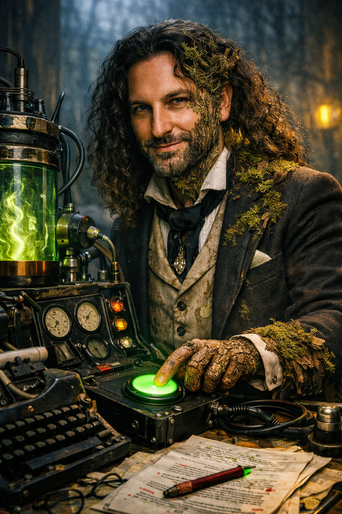
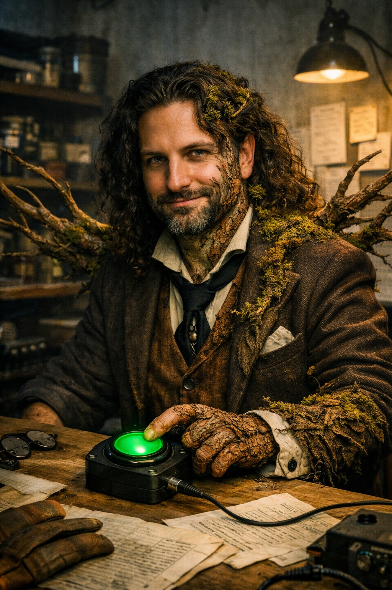

Primary panel
Main image sets tone; keep title and metadata concise.
Use this for special articles, essay features, or short story issues where image sequencing should carry equal narrative weight as text.

Main image sets tone; keep title and metadata concise.

Secondary image shifts register without breaking visual rhythm.

Detail image anchors a fragment, quote, or pull sentence.

Process slot supports publication notes or editorial framing.